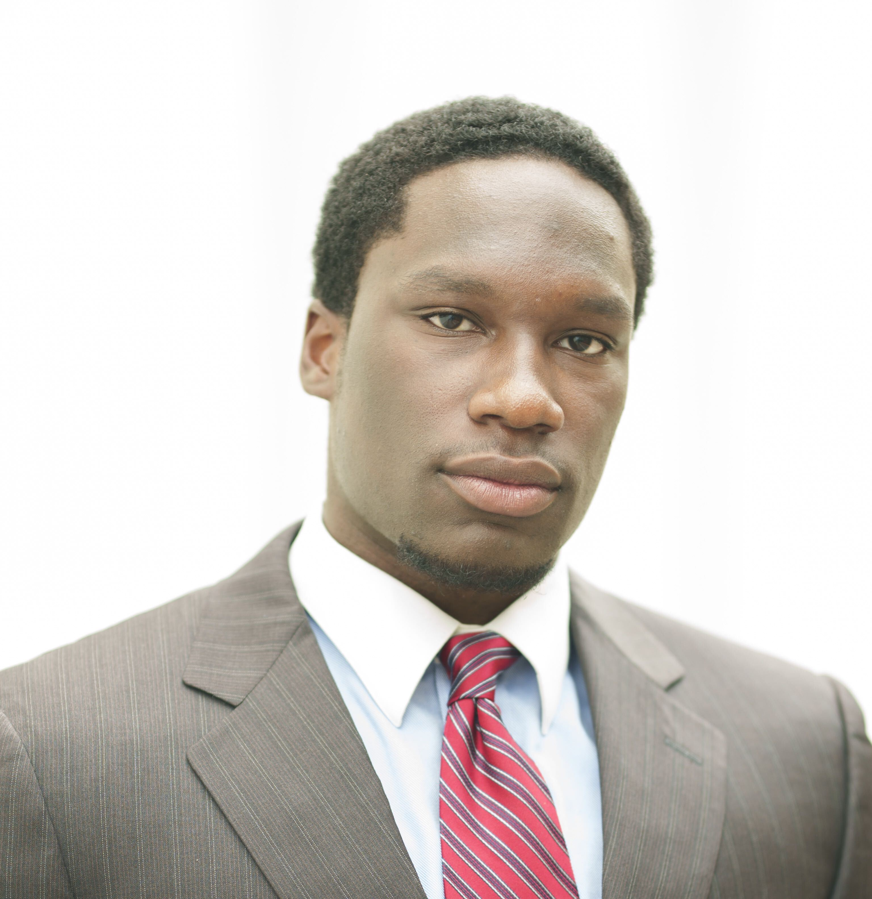
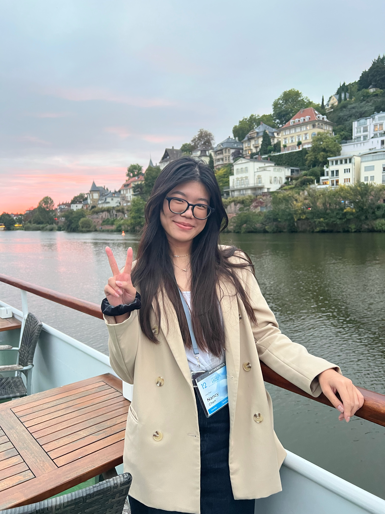
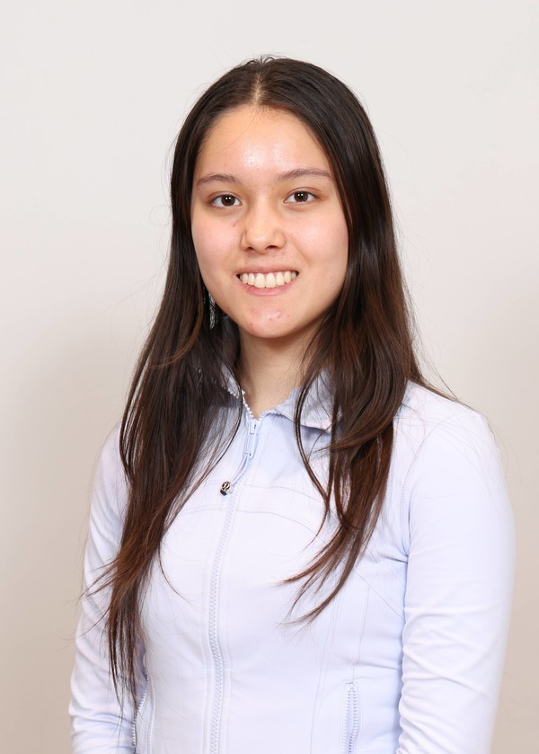

Leadership Team
The Cornell CS Theory Club is a student-run club that aims to increase undergraduate interest (although all are welcome) in theoretical computer science.
Executive Board

Lawrence Ozoigbo
Co-President

Nancy Chen
Co-President

Ahan Mishra
Web Maintainer

Elizabeth Pfauth
Social Co-Chair, Web Maintainer

Ching Huang
Social Co-Chair, Secretary
Faculty Advisor

Prof. Éva Tardos
Jacob Gould Schurman Professor of Computer Science · Faculty Advisor